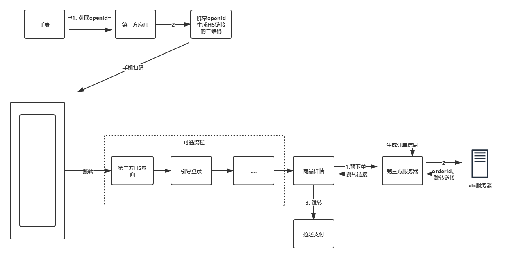

# 支付 SDK 说明
# 一、支付-服务器对接
小天才服务端提供的接口。
# 1.1 服务器公共信息
# 1.1.1 环境说明
- 测试环境域名：https://api-module.okii.com
- 正式环境域名：https://api.watch.okii.com
# 1.1.2 接入方式
如果未做说明，小天才提供的接口均以HTTP+POST+JSON方式调用,接口返回的也是 JSON 格式数据
content-type为
application/json,否则 HTTP Response 会返回415状态码
# 1.1.3 接口响应格式
| 字段名 | 字段含义 | 字段类型 |
|---|---|---|
| code | 请求返回状态码 | String |
| desc | 请求返回状态描述 | String |
| data | 返回结果 | Object |
如：
{
"code": "000001",
"desc": "success",
"data": null
}
# 1.1.4 服务器错误码
| 错误码 | 服务器标识 | 说明 |
|---|---|---|
| 000001 | success | 调用成功 |
| 12001 | XTCPAY_INVALID_REQUEST | 参数无效 |
| 12002 | XTCPAY_INVALID_APP | APP 信息无效 |
| 12003 | XTCPAY_INVALID_PAYCHANNEL | 支付渠道无效 |
| 12004 | XTCPAY_INVALID_PAYMODEL | 支付类型不存在 |
| 12005 | XTCPAY_AMOUNT_NOT_EQUAL | 支付数额不相同 |
| 12006 | XTCPAY_CREATE_ORDER_ERROR | 创建订单失败 |
| 12009 | XTCPAY_INVALID_ORDERID | 订单号不存在 |
| 12010 | XTCPAY_INVALID_USER_ORDER_RELATION | 传参用户和实际用户信息不符，无法获取订单详情 |
| 12011 | XTCPAY_INVALID_ORDER_ITEMORDER_RELATION | 传参订单 ID 和实际订单 ID 不符，无法获取订单详情 |
| 12012 | XTCPAY_PRODUCT_CONTENT_MODIFICATION | 订单 id 没变，但是商品内容有修改 |
| 12013 | XTCPAY_ORDER_PAID | 订单已支付 |
| 12014 | XTCPAY_ORDER_QUERY_ERROR | 订单查询失败 |
| 12015 | XTCPAY_ORDER_NOT_UPDATED | 订单状态未更新 |
| 12016 | XTCPAY_VERIFY_SIGN_ERROR | 签名校验错误 |
| 12020 | XTCPAY_CHECK_CODE_EXPIRE | 校验码过期 |
| 12021 | XTCPAY_CHECK_CODE_INVALID | 校验码错误 |
| 12099 | OTHER_ERROR | 其它错误 |
| 12209 | INVALID_OPEN_ID | 无效的openId（openId不存在或跟appId不对应） |
| 12207 | XTCPAY_ABNORMAL_ORDER | 订单异常 |
| 12208 | PREPAY_ORDER_FAIL | 预下单失败 |
| 12215 | PAY_CHANNEL_AND_MODEL_NOT_MATCH | 支付渠道与支付类型不匹配 |
| 12216 | order has been refunded | 订单已退款 |
# 1.1.5 常用签名算法
Hmac签名算法
# Java版本
import com.alibaba.fastjson.JSON;
import javax.crypto.Mac;
import javax.crypto.spec.SecretKeySpec;
import java.math.BigDecimal;
import java.security.MessageDigest;
import java.util.*;
public class HmacSignUtils {
public static void main(String[] args) {
int i = 0;
List<ProductInfo> list = new LinkedList<>();
while (i++ < 2) {
ProductInfo productInfo = new ProductInfo();
productInfo.setProductId(i + "");
productInfo.setProductName("vip" + i);
productInfo.setPrice(new BigDecimal("0.01"));
productInfo.setNumber(1);
list.add(productInfo);
}
// 构建需要参与签名的map
注意：具体参与签名的字段需要根据接口文档的说明填写，以下的字段只是做一个示例
Map<String, String> params = new HashMap<>();
params.put("appId", "申请入驻时分配的appId");
params.put("nonceStr", "6dab9b56474d4104b9dfc4c53eb25702");
params.put("orderId", "1");
params.put("payModel", "3");
params.put("refundOrderId", "a14284f2a10f3bcc8679b7af8a1fe91a");
params.put("totalFee", "0.02");
params.put("title", "商品标题");
params.put("ip", "172.28.184.52");
params.put("returnUrl", "https://www.baidu.com/");
// 如果参数是一个对象，请转化成json字符串
params.put("productInfos", JSON.toJSONString(list));
String signParamStr = createLinkString(paraFilter(params));
System.err.println("进行签名的串:" + signParamStr);
// 申请入驻时对应应用ID的appSecret
String appSecret = "申请入驻时分配的appSecrete密钥";
String sign = sha256HmacAndMd5(signParamStr, appSecret);
System.err.println("签名sign：" + sign);
}
public static String createLinkString(Map<String, String> params) {
List<String> keys = new ArrayList<>(params.keySet());
Collections.sort(keys);
String prestr = "";
for (int i = 0; i < keys.size(); i++) {
String key = keys.get(i);
String value = params.get(key);
// 拼接时，不包括最后一个&字符
if (i == keys.size() - 1) {
prestr = prestr + key + "=" + value;
} else {
prestr = prestr + key + "=" + value + "&";
}
}
return prestr;
}
public static Map<String, String> paraFilter(Map<String, String> paramMap) {
Map<String, String> result = new HashMap<String, String>();
if (paramMap == null || paramMap.size() <= 0) {
return result;
}
for (String key : paramMap.keySet()) {
String value = paramMap.get(key);
if (value == null || "".equals(value)
|| "sign".equalsIgnoreCase(key)
|| "sign_type".equalsIgnoreCase(key)) {
continue;
}
result.put(key, value);
}
return result;
}
public static String sha256HmacAndMd5(String message, String secret) {
String hash = "";
try {
Mac sha256Hmac = Mac.getInstance("HmacSHA256");
SecretKeySpec secretKey = new SecretKeySpec(secret.getBytes(), "HmacSHA256");
sha256Hmac.init(secretKey);
byte[] results = sha256Hmac.doFinal(message.getBytes());
// 进行MD5处理
MessageDigest md = MessageDigest.getInstance("MD5");
byte[] bytes = md.digest(results);
hash = parseByteToHex(bytes);
} catch (Exception e) {
e.printStackTrace();
}
return hash;
}
/**
* 转化为16进制
*/
public static String parseByteToHex(byte[] bytes) {
StringBuilder sb = new StringBuilder();
String tmp;
for (int n = 0; bytes != null && n < bytes.length; n++) {
tmp = Integer.toHexString(bytes[n] & 0XFF);
if (tmp.length() == 1) {
sb.append('0');
}
sb.append(tmp);
}
return sb.toString().toLowerCase();
}
static class ProductInfo {
private String productId;
private String productName;
private BigDecimal price;
private int number;
public String getProductId() {
return productId;
}
public void setProductId(String productId) {
this.productId = productId;
}
public String getProductName() {
return productName;
}
public void setProductName(String productName) {
this.productName = productName;
}
public BigDecimal getPrice() {
return price;
}
public void setPrice(BigDecimal price) {
this.price = price;
}
public int getNumber() {
return number;
}
public void setNumber(int number) {
this.number = number;
}
}
}
# php版本
doSign();
function doSign() {
// $params=['appId'='123','nonceStr'='123123','orderId'='123123',];
// 构建参与签名的集合
注意：实际参与签名的字段以接口文档说明为准，以下字段只是做一个示例的作用。
$params=array('appId' => '分配的appId',
'nonceStr' => '随机数，建议使用去掉-的uuid，如4d3f32b235e44084abbad04c36559dda',
'orderId'=>'订单ID',
// 其他需要参与签名的字段
);
$signStr=sign($params);
$params['sign']=$signStr;
echo(PHP_EOL);
echo('签名sign:' . $signStr);
}
function sign($arr){
ksort($arr);
$prestr = '';
$i = 0;
$count = count($arr) - 1;
// 拼接加密的字符串
foreach ($arr as $k=>$v){
// sign、sign_type不参与签名
if (in_array($k,['sign','sign_type'])) {
continue;
}
if(!is_null(strval($v))) {
if ($i == $count) {// 拼接时，不包括最后一个&字符
$prestr .= strval($k) . '=' . strval($v);
} else {
$prestr .= strval($k) . '=' . strval($v) . '&';
}
}
$i++;
}
echo('参与签名字符串:' . $prestr);
return md5(hash_hmac('sha256',$prestr,'申请入驻时分配的appSecrete',true));
}
# 1.2 获取校验码
# 1.2.1 接口地址
/pay-service/third/checkCode
# 1.2.2 请求参数
| 字段名 | 字段含义 | 字段类型 |
|---|---|---|
| appId | 第三方应用注册小天才开放平台时分配的 AppID | String |
| appSecret | 开放平台 secretId | String |
| orderId | 第三方订单 id（第三方自己生成，40 个字符长度），请确保唯一，建议用 uuid | String |
| totalFee | 订单金额 | Number |
如：
{
"appId": "appId", //开发平台appId
"appSecret": "appSecret", //开发平台appSecret
"orderId": "orderId", //第三方订单号
"totalFee": 110.01 //订单金额 单位:元,固定2位小数，如30.00
}
# 1.2.3 响应出参
| 字段名 | 字段含义 | 字段类型 |
|---|---|---|
| checkCode | 校验码（有效期10分钟） | String |
| orderId | 第三方订单 id | String |
| data | 返回结果 | Object |
如：
{
"code": "000001",
"desc": "success",
"data": {
"checkCode": "checkCode",
"orderId": "your orderId"
}
}
# 1.3 查询订单状态
# 1.3.1 接口
路径：/pay-service/third/order/query
旧接口
/pay-service/third/order/query/single/v2和/pay-service/third/order/query/single不再更新，但是仍然可以正常使用
请求格式：
| 参数名称 | 参数值 | 是否必须 |
|---|---|---|
| Content-Type | application/json | 是 |
入参：
| 字段名 | 必须 | 字段含义 | 字段类型 |
|---|---|---|---|
| appId | 是 | 第三方应用 appId | String |
| nonceStr | 是 | 随机数（建议使用UUID去掉"-"） | String |
| orderId | 是 | 第三方订单ID | String |
| sign | 是 | 签名，除sign外的所有非空参数都参与签名（签名算法见Hmac签名算法） | String |
返回数据
{
"code": "000001",
"desc": "success",
"data": {
"xtcOrderId": "02f8c92618c14553bce451156af61c63",//小天才订单Id(uuid形式)
"status": 2, //订单状态(1,"扣款中"),(2,"付款成功"),(3,"扣款失败"),(4,"过期"),(5,"退款中"),(6,"退款完成");
"payTime": 1615174308000//支付时间, ms时间戳
}
}
# 1.4 支付结果回调
注意点：
- 第三方需要提供测试环境和正式环境的回调接口，供调试和正式使用。
- 第三方提供 appId 和 url 地址给到小天才，小天才服务器需要进行配置，配置之后才可生效。
- 小天才服务器调用第三方接口异常的话(或者返回的错误码非"000001")，会触发重试，10s后重试1次，如果仍旧失败，10s后重试最后一次。
- 请确保回调接口的稳定性，以及做好接口的幂等性和相应的容错机制。
# 1.4.1 回调接口
当支付完成后，小天才服务器调用第三方提供的接口将支付结果通知到第三方服务器。
第三方提供的回调接口需满足以下要求：
方法
请求方法为：
POST请求头
请求头为：
content-type:application/json入参
| 字段名 | 字段含义 | 字段类型 |
|---|---|---|
| appId | 分配应用的 appId | String |
| notifyId | 随机 uuid | String |
| orderId | 第三方订单 id | String |
| sign_type | 签名类型（固定传参 rsa） | String |
| status | 支付结果状态 (1,"扣款中"),(2,"付款成功"),(3,"扣款失败"),(4,"过期"),(5,"退款中"),(6,"退款完成") | Integer |
| userId | 用户 id | String |
| sign | 签名（小天才服务器生成的 sign 签名，第三方需做验签处理，签名算法见支付结果签名算法） | String |
| xtcOrderId | 小天才订单号 | String |
| totalFee | 订单金额，单位:元,固定2位小数 | String |
| finishTime | 支付完成时间,如：2020-12-12 10:10:10 | String |
如：
{
"appId": "100001",
"notifyId": "uuid",
"orderId": "orderId",
"sign_type": "rsa",
"status": 1,
"userId": "",
"sign": "",
"xtcOrderId": "xtcOrderId",
"totalFee":"1.00",
"finishTime":"2020-12-12 10:10:10"
}
- 接口响应格式
| 字段名 | 字段含义 | 字段类型 |
|---|---|---|
| code | 请求返回状态码 | String |
| desc | 请求返回状态描述 | String |
| data | 返回结果 | Object |
如：
{
"code": "000001",
"desc": "success",
"data": null
}
例子：
@ResponseBody
@RequestMapping(
value = "/callback",
method = {RequestMethod.POST},
produces = {"application/json; charset=utf-8"},
consumers= {"application/json; charset=utf-8"})
public ResponseBody callback(@RequestBody CallBack callBack ){
boolean verify = VerifyUtil.verifySign(callBack);
ResponseBody body = new ResponseBody();
if (!verify) {
body.setCode(“000002”);
body.setDesc(“verify fail”);
return body;
}
//业务逻辑
body.setCode(“000001”)；
body.setDesc(“success”);
return body;
}
# 1.4.2 退款回调接口
当小天才管理员在后台执行退款操作之后，小天才通过该接口通知第三方。
第三方提供的退款回调接口需满足以下要求：
方法
请求方法为：
POST请求头
请求头为：
application/json入参
| 字段 | 类型 | 是否必须 | 描述 |
|---|---|---|---|
| appId | String | 是 | 分配的应用ID |
| notifyId | String | 是 | 随机数（uuid） |
| orderId | String | 是 | 第三方的订单ID |
| refundTime | String | 是 | 退款时间（yyyy-MM-dd HH:mm:ss格式） |
| status | Integer | 是 | 状态(1-"扣款中",2-"付款成功",3-"扣款失败",4-"过期",5-"退款中",6-"退款完成") |
| userId | String | 是 | 订单对应的用户ID |
| xtcOrderId | String | 是 | 小天才的订单ID |
| refundFee | String | 是 | 退款金额 |
| sign | String | 是 | 签名值（除了sign和sign_type字段其他非空字段都参与签名，签名算法见 支付结果签名算法） |
| sign_type | String | 是 | 签名类型，固定传参rsa |
出参格式： JSON
出参：
| 字段 | 类型 | 描述 |
|---|---|---|
| code | String | 响应码（除了"000001"，其他响应码默认失败，失败会触发重试） |
| desc | String | 描述 |
| data | Object | 响应数据 |
出参示例：
{
"code": "000001",
"desc": "success",
"data": null
}
接口设计代码示例：
@ResponseBody
@RequestMapping(
value = "/refundCallback",
method = {RequestMethod.POST},
produces = {"application/json; charset=utf-8"},
consumers= {"application/json; charset=utf-8"})
public ResponseBody refundCallback(@RequestBody CallBack callBack ){
boolean verify = VerifyUtil.verifySign(callBack);
ResponseBody body = new ResponseBody();
if (!verify) {
body.setCode(“000002”);
body.setDesc(“verify fail”);
return body;
}
//业务逻辑
bizProcessMethod();
body.setCode(“000001”)；
body.setDesc(“success”);
return body;
}
# 1.4.3 自助退款
# 退款资格校验API
接口路径： 自定义，确定之后将接口url提供给小天才方即可。
请求消息头：
请求头 值 说明 Content-Type application/json 请求协议：https
请求方式：POST
数据格式：json
请求参数
参数 类型 是否必须 描述 xtcOrderId String 是 小天才订单ID sign String 是 签名，除sign外的所有非空参数都参与签名（签名算法见Hmac签名算法） 示例：
{ "xtcOrderId":"xtcOrderId", "sign":"sign" }出参示例：
{
"code": "000001",
"data":
{
"couldRefund": 1,
"leftDay": 14,
"openId": "72dcdc1081554bc29fb87e290685cexx",
"orderAmount": 1.00,
"refundAmount": 0.50,
"usedDay": 16
},
"desc": "success"
}
# 1.4.4 支付结果签名算法
小天才服务器调用第三方，会对关键信息生成签名(sign 字段)，以防篡改，第三方应该对签名进行校验。请在回调接口逻辑中校验签名。回调信息除了sign和sign_type字段，其他字段都参与验签。后续可能会增加新字段,新字段默认会加入到签名中，请做好兼容处理。 校验签名示例
下面的例子是服务器 Java、Php 代码，如果第三方服务器是其他的语言，请参考该代码自己实现 RSA 校验即可。
校验签名示例--java
public static void main(String[] args) {
String sign = "签名";
//签名公钥
String publicKey = "接入支付功能的时候小天才服务器分配好的公钥";
HashMap<String, Object> param = new HashMap<>();
注意：实际参与签名的字段以接口文档说明为准，以下字段只是做一个示例的作用。
param.put("appId","100010");
param.put("notifyId","uuid");
param.put("orderId","orderId");
param.put("status",1);
param.put("userId","userid");
param.put("xtcOrderId","xtcOrderId");
param.put("totalFee","1.00");
param.put("finishTime","2020-12-12 10:10:10");
// param.put("其他字段","xxx");
String preSignStr = createLinkString(param);
boolean isSign = verify(preSignStr, sign, publicKey,"UTF-8");
}
/**
* 把数组所有元素排序，并按照“参数=参数值”的模式用“&”字符拼接成字符串
*
* @param params 需要排序并参与字符拼接的参数组
* @return 拼接后字符串
*/
public static String createLinkString(Map<String, Object> params)
{
List<String> keys = new ArrayList<String>(params.keySet());
Collections.sort(keys);
String prestr = "";
for (int i = 0; i < keys.size(); i++)
{
String key = keys.get(i);
Object value = params.get(key);
if(value == null) {
continue;
}
if (i == keys.size() - 1)
{// 拼接时，不包括最后一个&字符
prestr = prestr + key + "=" + value;
}
else
{
prestr = prestr + key + "=" + value + "&";
}
}
return prestr;
}
/**
* RSA验签名检查
*
* @param content 待签名数据
* @param sign 签名值
* @param publicKey xtcpay公钥
* @param charset 编码格式 UTF-8
* @return 布尔值
*/
public static boolean verify(String content, String sign, String publicKey, String charset)
{
try {
KeyFactory keyFactory = KeyFactory.getInstance("RSA");
//Base64是base64编码工具类，第三方可自行替换自己的工具类
byte[] encodedKey = Base64.decode(publicKey);
PublicKey pubKey = keyFactory.generatePublic(new X509EncodedKeySpec(encodedKey));
java.security.Signature signature = java.security.Signature.getInstance("SHA1WithRSA");
signature.initVerify(pubKey);
signature.update(content.getBytes(charset));
//Base64是base64编码工具类，第三方可自行替换自己的工具类
boolean bverify = signature.verify(Base64.decode(sign));
return bverify;
}
catch (Exception e)
{
// LOGGER.error(e);
}
return false;
}
校验签名示例--php
/**
* 小天才支付结果回调方法。
* @param Request $request
* @return false|string
*/
public function notifyUrl(){
//获取请求body里面的数据。
$data = file_get_contents("php://input");
//json字符串转数组
$data = json_decode($data,true);
//验签
$result = $this->checkSign($data);
//通过验签 且状态为2 支付成功的回调 小天才文档
if($result && $data['status']==2){
//订单支付成功后的操作。。。。。
}
//通过验签 且状态为6 退款成功的回调 小天才文档
if($result && $data['status']==6){
//订单退款成功后的操作。。。。。
}
//返回数据给小天才
$arr=[
"code"=>"000001",
"desc"=>"success",
"data"=> null
];
return json_encode($arr);
}
/**
* 根据小天才提供的公钥验签
* @param $data 小天才支付接口回调服务器的post数据转换后的数组
* @return bool 判断验签是否成功
*/
public function checkSign($data){
//拼接验证字符串，此处根据小天才文档可能会改变，如果验签失败可以看最新的小天才文档整理参数
注意：实际参与签名的字段以接口文档说明为准，以下字段只是做一个示例的作用。
$arr=[
"appId"=> "小天才提供的appId",//小天才提供的appId
"notifyId"=> $data['notifyId'],
"orderId"=> $data['orderId'],
"status"=> $data['status'],
"userId"=> $data['userId'],
"xtcOrderId"=> $data['xtcOrderId'],
"totalFee"=> $data['totalFee'],
"finishTime"=> $data['finishTime']
//"新字段"=> $data['新字段']
];
//签名步骤一：按字典序排序参数
ksort($arr);
//签名步骤二：按照“参数=参数值”的模式用“&”字符拼接成字符串
$prestr = "";
$i = 0;
$count = count($arr) - 1;
foreach ($arr as $k=>$v){
if(!is_null(strval($v))) {
if ($i == $count) {// 拼接时，不包括最后一个&字符
$prestr .= strval($k) . "=" . strval($v);
} else {
$prestr .= strval($k) . "=" . strval($v) . "&";
}
}
$i++;
}
//步骤三:拼接openssl公钥并按64长度拆行
$publicKey = "小天才提供的公钥"
$publicKey = "-----BEGIN PUBLIC KEY-----\n" .
wordwrap($publicKey, 64, "\n", true) .
"\n-----END PUBLIC KEY-----";
//步骤四：转换为openssl格式密钥
$publicKeyId = openssl_pkey_get_public($publicKey);
//步骤五：公钥SHA1验签
$sign = base64_decode($data['sign']);
$result = openssl_verify($prestr, $sign, $publicKeyId,OPENSSL_ALGO_SHA1);
openssl_free_key($publicKeyId);
//返回验签结果
return $result === 1 ? true : false;
}
# 1.5 网页支付预下单
接口： /pay-service/third/wapPayPre
请求方式： POST
请求头
| 参数名称 | 参数值 | 是否必须 |
|---|---|---|
| Content-Type | application/json | 是 |
入参
| 名称 | 类型 | 是否必须 | 备注 |
|---|---|---|---|
| openId | string | 必须 | 手表openId |
| ip | string | 非必须 | 客户端IP，当payChannel=2即为微信支付时该参数必填 |
| payModel | number | 必须 | 支付类型 (3.H5网页支付,4-微信内JSAPI支付)。注：若想在微信里边提供支付宝支付，该值还是传3 |
| title | string | 必须 | 订单标题 |
| refundOrderId | string | 必须 | 第三方订单id |
| totalFee | number | 必须 | 订单总金额（金额为两位精度的小数） |
| productInfos | object [] | 必须 | 商品信息 |
| ├─ number | number | 必须 | 商品数量 |
| ├─ productId | string | 必须 | 商品ID |
| ├─ price | decimal | 必须 | 单价 |
| ├─ productName | string | 必须 | 商品名称 |
| appId | string | 必须 | 开放平台appId |
| payChannel | number | 必须 | 支付渠道(1.支付宝，2.微信) |
| returnUrl | string | 非必须 | 支付结束之后的跳转界面 |
| sign | string | 必须 | 签名，除sign外的所有非空参数都参与签名（签名算法见Hmac签名算法） |
返回数据
| 名称 | 类型 | 备注 |
|---|---|---|
| code | string | 响应码 |
| data | object | 出参 |
| ├─ orderId | string | 支付中心的订单ID |
| ├─ jumpUrl | string | H5跳转的页面链接 |
| desc | string | 描述 |
# 1.6 支付问题解答
checkCode有啥用？
checkCode是由小天才服务器生成的uuid,用来标识订单关键信息。当客户端下单时，xtc服务器会判断订单信息与第三方服务器生成checkCode时提交的订单信息是否一致，以此来防止客户端提交的订单信息被篡改。使用同一个orderId可以重复调用checkCode接口，旧的checkCode将失效。一个orderId在同一时刻只能有一个有效的checkCode.checkCode如没有使用，会保存一个月(暂定)，使用过的checkCode变成无效。
生成二维码时（下单时）失败，返回12020、12021
- 重复调用了checkCode接口，下单时使用了旧的checkCode，会返回12021
- 手表环境和第三方服务器环境不一致，导致找不到checkCode，下单时会返回12020
- 下单时传入的totalFee和第三方服务器调用checkCode接口传入的totalFee不一致（包括小数位不一致），下单时会返回12021
生成二维码时（下单时）失败，返回12001、12099
请确认传入的订单、商品信息完整，尽量将可填的信息补全，如productName,title,price,productId等
回调验证签名失败
- 确认totalFee校验签名时是否是2位小数，xtc服务器使用2位小数生成签名（不足2位小数补0,如30.00,30.10）
- 确认对接时验签的字段和最新文档中验签的字段是否一致，如不一致，请联系xtc开发，xtc服务器对返回不同的字段有做控制
- 确认为null的字段是否也加入了验签，xtc服务器对为null的字段没有加入验签
回调失败有没有重试？
目前有简单的重试机制，10秒重试一次，一共重试2次。即：回调失败->10s后重试一次->仍旧失败->10s后重试最后一次->结束 对于状态未同步的订单，第三方需调订单查询接口查询最新状态
没有对应语言的签名算法demo
签名算法为SHA1WithRSA，文档中提供了java和php版的demo，xtc使用java技术栈，其他语言的需要接入方自行开发
订单多久过期？
- 手表二维码支付： 手表生成了二维码，xtc此时会生成订单。如果二维码一直未扫描（未唤起支付宝/微信），则订单一直是未支付状态， 如果二维码被支付宝/微信扫描了，但是没有支付或者支付失败，此时微信和支付宝那边会生成订单，微信订单过期时间是49个小时（暂定）， 支付宝订单的过期时间是3分钟（暂定）。支付宝/微信订单过期后，xtc订单会变成过期状态。 （微信和支付宝订单过期时间这样设置的原因暂未知，待确认后会统一）
- 家长app内支付： 通过家长app生成的订单，如果唤起了微信和支付宝，微信和支付宝那边会生成订单，微信订单过期时间是60分钟（暂定）， 支付宝订单的过期时间是60分钟（暂定）。支付宝/微信订单过期后，xtc订单会变成过期状态。
- 网页支付：同手表二维码支付。
网页支付微信报 商家参数错误 如何解决？
请确保传参按照文档描述填写，比如IP地址必须为发起支付的客户端地址，不能填127.0.0.1等。
# 二、手表端扫码支付SDK说明
适用于手表端的第三方 APP 中集成支付功能，调试前请前往应用中心将手表"设置"应用升级至最新版本
（注：手表端获取支付 SDK 能力需要注册开发者账号）
# 2.1 注册开发者账号
通过小天才开放平台注册开发者账号，并创建三方应用，获取 appId 和 appSecret 信息
点击首页右上方的“申请入驻”申请注册，完成注册后生成信息将通过微信发送
![]()
# 2.2 流程
# 2.2.1 简易流程图（SDK1.0.3之后版本）
# 2.2.2 整体流程图
# 2.3 搭建开发环境
将 XTC_payApi.aar 复制粘贴到工程的 app/libs/目录下。
备注：此 AAR 当正式注册完成开发者账号之后，联系小天才的开发维护人员获取
在 您 Android 项目的 app 目录下的 build.gradle 文件中添加以下代码，引入支付的 AAR SDK。
android{
repositories {
flatDir {
dirs 'libs'
}
}
}
dependencies {
// 最新的SDK版本为1.0.3
implementation (name: 'XTC‐payApi‐1.0.3', ext: 'aar')
}
注意（重要）：
- 之前的支付SDK 1.0.0—1.0.2版本中，第三方需要用户授权拿到openId，再将openId传入SDK中，如果不授权则不能使用，这是十分不便的，
- 因此，从支付SDK1.0.3版本之后，我们去除了这个限制，第三方调用SDK支付时只要增加一个参数
req.isUseSdkOpenid = true，这样小天才会自动获取openId，并在支付完成之后将此openId回传给第三方。 修改点如下图红色部分 - 如果你选择接入的是支付聚合码，那么需要满足支付聚合码的前提条件。
后续新接入的第三方开发者都会发送支付SDK1.0.3版本，
目前已经接入了支付SDK 1.0.0-1.0.2版本的第三方开发者需要重新获取支付SDK1.0.3版本并进行适配。
# 2.4 表端示例代码
# 2.4.1 AndroidManifest.xml 设置
添加必要的权限支持, 请求支付的界面启动模式使用 singleTask
<!--添加必要的权限支持-->
<uses‐permission android:name="android.permission.INTERNET"/>
<!--请求支付的界面启动模式使用 singleTask-->
<activity
android:name=".MainActivity"
android:launchMode="singleTask">
</activity>
# 2.4.2 发送请求
下面代码直接全部 copy 到你的代码中，只改那些可变的参数，其他的地方进来不用改。
之前有第三方开发人员擅自改动，导致序列化出错，无法进行支付。
PayApiManager payApiManager = new PayApiManager(TestActivity.this);
SendPayMesToXTC.Request req = new SendPayMesToXTC.Request();
// 填入您的应用的appId,第三方应用注册小天才开放平台时分配的 AppID
req.appId = "100001";
// 第三方服务器提供的第三方订单id，请自行保证唯一 （第三方自己生成，40 个字符长度）
req.orderId = ORDER_ID;
// 下面两个属性在SDK 1.0.0-1.0.2版本和SDK1.0.3版本有所不同，第三方开发者得注意看看
// 账户系统授权获取到的openid，这个属性在SDK1.0.3以上版本以后第三方开发者可以不需要传入，SDK自动去小天才服务器获取，此属性在SDK1.0.3以上版本已经Deprecated
// 如果下面的isUseSdkOpenid属性你们传入为false的话，那么就会第三方开发者使用传入的openId
// 如果下面的isUseSdkOpenid属性你们传入为true的话，那么就会屏蔽第三方开发者使用传入的openId，直接从小天才服务器获取新的openid
req.openId = OPEN_ID;
//该属性只有SDK1.0.3以上版本才有，如果是老版本的SDK的话，则会默认为false
//如果isUseSdkOpenid为true的话，上面第三方传入的openId不生效，支付SDK内部 会替换掉 实际从服务器主动获取的openid
//如果isUseSdkOpenid为false的话，上面第三方传入的openId有效， 支付SDK内部 不会去替换掉 实际从服务器主动获取的openid
req.isUseSdkOpenid = true;
// 第三方服务器返回的验证码 校验码，校验订单是否有效（通过获取支付校验码接口获取）
req.checkCode = CHECK_CODE;
// 选择支付方式 0：默认值，支持支付宝和微信支付，用户选择 1:扫描支付方式-支付宝 2:扫描支付方式-微信 3:扫描支付方式-聚合码（需要SDK版本大于等于1.0.4，见下方注意3）
req.payType = 3;
// 设置你们订单页面自己要展示的图片
req.setThumbImage(BitmapFactory.decodeResource(getResources(),R.drawable.ic_portrait_friend));
//订单总金额（金额为两位精度的小数）
req.totalPrice = new BigDecimal("123.45");
//订单标题，展示在微信或支付宝的标题
req.describeTitle = msg.getText().toString();
//订单商品列表信息
ArrayList<ProductInfo> productList = new ArrayList<ProductInfo>();
//订单商品
ProductInfo productInfo = new ProductInfo();
//订单商品 Id
productInfo.setProductId("1");
//订单商品 名称
productInfo.setProductName("vip3");
//订单商品 总价（非单价）
productInfo.setPrice(new BigDecimal("123.45"));
//订单商品 数量
productInfo.setNumber(1);
//将订单商品添加到订单商品集合
productList.add(productInfo);
// 这里是序列化products订单List，别copy错了，否则请求反序列化json的操作会出错。
req.productInfos = GsonUtil.toJSON(productList);
// 发送前建议打印下日志，方便第三方开发人员自己核对下各参数是否正确
LogUtil.d(TAG,"req = " + req);
//通过SDK请求支付
payApiManager.sendRequestToXTC(req);
- 注意1：
在调用payApiManager.sendRequestToXTC(req); 之前建议通过日志打印出req的所有信息，便于出现问题的时候查看req的参数是否完整。 之前有不少开发者部分参数为null导致二维码生成失败，导致很难查问题，如果加上了日志打印，开发者核对参数时候有为空的就很容易分析出问题了。
- 注意2：
如果你的项目开启了混淆，因为上面的订单信息会序列化成 json 格式，所以请参考下面的 【2.4.5 注意事项】 章节配置好混淆配置。
- 注意3：
如果您想接入的是支付聚合码，那么必须满足下方条件才能正常接入：
- 将SDK版本升级到1.0.4以上（含1.0.4），调整
req.payType的传参为3即可自动更换为聚合码。- 将手表基础应用升级到2.8.00及其以上
# 2.4.3 接收支付结果
下面的这些错误码 可以参考 章节 【1.1.4 服务器错误码】 中列举的
//第一步：在页面实现IPayResponseCallback接口
public class MainActivity extends Activity implements IPayResponseCallback {
// 第三步，初始化PayApiManager实例
@Override
protected void onCreate(@Nullable Bundle savedInstanceState) {
...
authManager = new PayApiManager(this);
}
// 第四步 处理返回数据，触发IPayResponseCallback
protected void onNewIntent(Intent intent) {
super.onNewIntent(intent);
setIntent(intent);
authManager.handleIntent(intent, this);
}
//第二步：实现onResp和onReq方法
public void onRequest(BaseRequest baseRequest) {
//to‐do 暂时可以不管
}
public void onResponse(BaseResponse baseResponse) {
// 这3行代码是打印支付SDK回调回来的数据,
// 在SDK1.0.3版本以上及其配套的手表设置版本才会有openid回调，SDK 1.0.0-1.0.2版本没有openid回调
SendPayMesToXTC.Response response = (SendPayMesToXTC.Response) baseResponse;
LogUtil.d(TAG, "onResponse called with: response=" + response);
// toast提示支付回调回来的openid，这个openid在支付SDK1.0.3之后不需要第三方开发者主动传给支付SDK，
// 支付SDK会自己去小天才服务器获取，并通过onResponse回调给第三方，
// 第三方可以在此处保存这个openid传给第三方自己的业务服务器，以备后续和小天才对账核对使用
Toast.makeText(this, "支付回调 openid 为： " + response.openid , Toast.LENGTH_SHORT).show();
//异常情况下errorCode可能为空等，注意判空
if (BaseResponse.Code.PAY_SUCCESS.equals(baseResponse.errorCode)) {
Toast.makeText(this, "支付成功", Toast.LENGTH_SHORT).show();
return;
} else {
String errorToast = "";
// 下面的这些错误码 可以参考 章节 1.1.4 服务器错误码 中列举的
switch (baseResponse.errorCode) {
case BaseResponse.Code.ERROR_NETWORK:
errorToast = "网络异常";
break;
case "1003":
errorToast = "支付频繁,请稍后再使用";
break;
case "12001":
errorToast = "参数无效";
break;
case "12005":
errorToast = "支付数额不相同";
break;
case "12006":
errorToast = "订单创建错误";
break;
case "12008":
errorToast = "支付中心获取支付凭证失败";
break;
case "12009":
errorToast = "订单号不存在";
break;
case "12010":
errorToast = "传参用户和实际用户信息不符，无法获取订单详情";
break;
case "12012":
errorToast = "第三方订单id没变，但是商品内容有修改";
break;
case "12013":
errorToast = "订单已支付";
break;
case "12099":
errorToast = "其它错误";
break;
case "12201":
errorToast = "请求参数有问题";
break;
default:
//还有可能有一些异常的错误返回码
break;
}
}
}
}
# 2.4.4 可选：通过广播可以接收支付成功信息
//动态注册
private void initRis() {
IntentFilter intentFilter = new IntentFilter();
intentFilter.addAction("com.xtc.pay.success");
registerReceiver(myBroadcastReceiver,intentFilter);
}
public BroadcastReceiver myBroadcastReceiver = new BroadcastReceiver() {
@Override
public void onReceive(Context context, Intent intent) {
// 第三方订单id
String refundOrderId = intent.getStringExtra("refundOrderId");
Log.i(TAG,"onReceive refundOrderId = " + refundOrderId);
}
}
# 2.4.5 注意事项
如果你的 APP 开启了混淆，请配置一下支付相关的类不混淆，不然可能会导致订单信息序列化的时候因为混淆的源，导致反序列化的时候解析不出来。
-keep class com.xtc.payapi.**{*;}
# 2.5 获取校验码
参考章节 1.2 获取校验码
# 2.6 查询订单状态
参考章节 1.3 查询订单状态
# 2.7 支付结果回调
参考章节 1.4 支付结果回调
# 三、小天才APP支付SDK说明
适用于小天才手机 APP 客户端中的支付功能。前提是已经在小天才手机 APP 接入了应用服务号。
注意事项：受苹果内购规则限制，小天才家长 APP（ios 端）暂不支持虚拟商品的上线与支付，android 端无影响
关于应用服务器的接入流程参考链接： 应用服务号 (opens new window)
# 3.1 整体流程
- 用户在第三方客户端（小天才 APP 里面的第三方应用服务号）选择需要购买的商品
- 调用第三方服务器（第三方服务器需要调用 XTC 服务器获取支付校验码）获取订单号和支付校验码
- 带着支付校验码通过 jsBridge 交互库来调用
xtc.createXtcPayTrade方法 进行支付 - 支付完成后，第三方客户端调用第三方服务器查询订单状态（第三方服务器需要调用 XTC 服务器获取订单状态）
流程图如下所示：
# 3.2 获取支付校验码
参考章节 1.2 获取校验码
# 3.3 支付订单
方法名：createXtcPayTrade（xtcJSBridge 库方法）
- 传参说明
| 字段名 | 字段含义 | 字段类型 |
|---|---|---|
| appId | 第三方应用注册小天才开放平台时分配的 AppID | String |
| openId | 一个手表的一个应用号 对应唯一的 openId | String |
| watchNickName | 手表昵称 | String |
| checkCode | 校验码，校验订单是否有效（获取支付校验码接口获取） | String |
| refundOrderId | 第三方订单 id（orderId） | String |
| totalFee | 订单总金额（金额为两位精度的小数） | String |
| title | 订单标题 | String |
| productInfos | 商品信息 | List<Good> |
其中 productInfos 包含的字段：
| 字段名 | 字段含义 | 字段类型 |
|---|---|---|
| productId | 商品 Id | String |
| productName | 商品名称 | String |
| price | 商品价格（总价） | String |
| number | 商品数量 | int |
注意：（totalFee、watchNickName、title、商品名称 productName；这些显示信息不能为空。）
- CALLBACK 回调说明 :
触发回调时间：退出 App 支付界面时触发回调（App 支付界面是指小天才 App 自身的选择支付方式界面）。
- 回调函数
| 名称 | 类型 | 必填 | 描述 |
|---|---|---|---|
| success | Function | 否 | 接口调用成功的回调函数 |
| fail | Function | 否 | 接口调用失败的回调函数 |
| complete | Function | 否 | 接口调用结束的回调函数（调用成功、失败都会执行） |
- code 说明
| code | 描述 |
|---|---|
| 000001 | 支付流程完成（不代表支付成功，需根据服务器查询） |
| 000007 | 参数无效 |
- 示例 ：
var params = {
appId: '100001', //开放平台appId
openId: 'openId', //手表openId
watchNickName: '小天', //手表昵称
checkCode: 'ASDFRGFSSS', //校验码，'获取支付校验码'接口获取
refundOrderId: 'abcde12345abcde12345abcde12345abcde12345', //第三方订单id
totalFee: 110.01, //订单总金额（金额为两位精度的小数）
title: '订单标题', //订单标题
productInfos: [
{
productId: '1',
productName: 'vip3',
price: '33', //总价（非单价）
number: 2,
},
{
productId: '1',
productName: 'vip3',
price: '33', //总价（非单价）
number: 2,
},
], //商品信息
};
xtc.createXtcPayTrade(params, {
complete: function(data) {
// 一定会执行
console.log(data);
},
success: function(data) {
// 执行成功回调
console.log(data);
},
fail: function(data, code) {
// 执行失败回调
console.log(data);
},
});
# 3.4 查询订单状态
参考章节 1.3 查询订单状态
# 四、网页支付
适用于H5浏览器的支付，以及微信内置浏览器的支付。
# 4.1 整体流程
- 用户在手表应用中点击购买商品之后，第三方根据自身的链接（需携带openId）生成二维码。
- 用户使用微信/浏览器等扫码之后跳转到第三方的H5界面，浏览商品之后点击支付。
- 此时第三方调用小天才的预下单接口，拿到跳转链接和小天才订单号，跳转到链接拉起支付。
- 用户支付完成之后，跳转到第三方指定的跳转界面中（如果在传参中没有指定则采用默认方式跳转），之后通过回调接口通知第三方回调结果。
# 4.2 整体交互流程图

# 4.3 细节时序图
# 4.4 获取openId
若第三方已经通过其他方式获取到了openId，比如授权，则无需再调用当前方法去获取，将获取到的openId直接使用即可。
调用步骤：
1、导入opendataapi的aar包
请联系小天才同学获取
2、通过以下方法获取openId
import com.xtc.opendataapi.contact.SendMesToXTC;
import com.xtc.opendataapi.opendatamanager.IGetOpenIdCallback;
import com.xtc.opendataapi.opendatamanager.OpenDataApiManager;
OpenDataApiManager openDataApiManager = new OpenDataApiManager(this);
SendMesToXTC.Request request = new SendMesToXTC.Request();
request.setAppId("100078");
openDataApiManager.getOpenId(request, new IGetOpenIdCallback.Stub() {
@Override
public void onResult(String code, String desc, String openId) {
Log.i(TAG,"the openId: "+openId+",code :"+code);
}
});
3、异常情况介绍
/**
* 成功
* */
String SUCCESS = "1";
/**
* 接口请求失败
* */
String INTERFACE_REQUEST_FAILED = "-1";
/**
* 服务器返回为空
* */
String NULL_DATA = "-2";
/**
* 其他异常
* */
String OTHER_ERROR = "-3";
4、由于openId一般生成之后便不会改变（特殊情况见下），小天才这边建议获取之后将openId值缓存到本地后续直接使用以提升性能。另外如果因为某些不可抗力原因（如无网络）获取不到openId时，希望能给用户一个友好的提示让其知道当前的情况。
特殊情况：手表解除绑定之后重新绑定并选择设置为新手表，只有这种情况openId会发生变化。
注：要支持获取openId需要在应用中心升级最新的4.5.50设置版本
# 4.5 下单接口
详情见 预下单接口
# 4.6 查询订单
详情见 查询订单状态
# 4.7 金额管控说明
网页支付会自动接入金额管控的限制，关于金额管控的详细说明见支付金额管控。
# 五、聚合码支付
# 5.1 说明
支付聚合码的码由小天才方生成，并且只能使用微信/支付宝扫才会生效，不能使用浏览器等其他方式扫码。
# 5.2 前提条件
支付聚合码在满足以下两个条件之后才能正常使用：
- 将手表支付SDK版本升级到1.0.4以上（含1.0.4），调整SDK手表请求处的入参
req.payType为3即可自动更换为聚合码。- 将手表基础应用升级到2.8.00及以上。
# 5.2 接入流程
对于想要接入聚合码的同学，请根据自己的情况选择下方对应的调整方式。
# 5.3 金额管控说明
聚合码支付会自动接入金额管控的限制，关于金额管控的详细说明见支付金额管控。
# 六、支付金额管控
为了响应国家政策，小天才会对当月消费超过一定金额的手表进行管控，被管控的手表每笔消费都需要家长（爸爸、妈妈或管理员）同意之后方可完成支付，次月重新开始计算（即重置）。
支付管控是小天才方单方面的限制，不需要您做接入或做任何改动，您只需要知道小天才有这样的机制即可。
# 6.1 触发条件
如果想要触发手表支付金额的管控，那么需要满足下方三个条件：
家长端（爸爸、妈妈或者管理员三者任一角色）的小天才app版本升级到8.72.0及以上。
手表当月消费（不含正在进行的订单）超过一定金额（默认200元）。
- 该金额可以在 "小天才APP->更多->应用管理->VIP购买记录->设置（右上角）" 中进行自定义设置，默认为200元。
该功能需要满足以下条件展示：
- 将手表基础应用升级到2.8.00及其以上才会在APP展示，没有此功能的话按照默认的200元限额处理。
- 升级 支付SDK 到 1.0.4 及以上。
- 升级完成之后重启下APP。
- 该模块展示图
使用的是网页支付或者聚合码支付。
# 七、商品名称命名规范
# 7.1 命名规则及参考
为保障用户能明确知晓付费应用，开发者商品名称命名需采用"应用名_商品名称"的格式，如“智宠学堂_季度VIP”、“英语学院_1个月VIP”
# 八、售后服务规则
# 8.1 退款原则
若为孩子操作付费，付费后一个月内无条件退款。若非孩子付款的退款请求，基于用户沟通协商情况酌情处理。